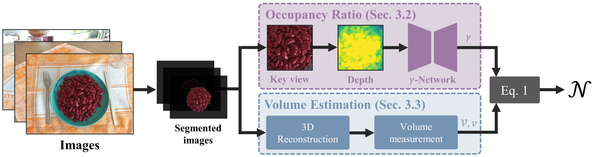

Visual object counting is a fundamental computer vision task underpinning numerous real-world
applications, from cell counting in biomedicine to traffic and wildlife monitoring. However,
existing methods struggle to handle the
challenge of stacked 3D objects in which most objects are hidden by those above them.
To address this important yet underexplored problem, we propose a
novel 3D counting approach that decomposes the task into two complementary subproblems -
estimating the 3D geometry of the object stack and the occupancy ratio from
multi-view images. By combining geometric reconstruction and deep learning-based depth analysis,
our method can accurately count identical objects within containers, even when they are
irregularly stacked. We validate our 3D Counting pipeline on diverse
real-world and large-scale synthetic datasets, which we will release publicly to facilitate
further research.
Presentation video
Method

At the heart of our proposed solution is a key insight:
the fraction of space occupied by objects, which we will refer to as the
occupancy ratio, can be accurately inferred from a depth map
computed by a monocular depth estimator from a view in which enough objects of interest are
clearly visible. In most cases, such a view is one where the container is seen roughly from above,
without having to be strictly vertical.
To exploit it, we break down the problem into two
complementary tasks: estimating the 3D geometry of the object stack and estimating the
occupancy ratio within this volume. This decomposition enables us to solve the 3D counting problem
through a combination of geometric reconstruction for volume estimation and deep learning-based
depth analysis for occupancy prediction, both of which can be solved efficiently.
Released datasets
We release the first datasets for this task, which were used in our work to train our
occupancy network and validate our approach.
An extensive new 3D Counting Dataset comprising
400,000 images from 14000 physically simulated and rendered scenes with precise 3D
meshes, ground-truth object counts and volume occupancy computed programmatically.
A complementary real-world validation dataset consisting of 2381 images from 45
scenes captured with accurate camera poses and manually verified total counts.
A human baseline derived from 1485 annotations on real images, representing estimates
from 33 participants.
Citation
@inproceedings{dumery2025counting,
title = {{Counting Stacked Objects}},
author = {Dumery, Corentin and Ett{\'e}, Noa and Fan, Aoxiang and Li, Ren and Xu,
Jingyi and Le, Hieu and Fua, Pascal},
booktitle = {Proceedings of the IEEE/CVF International Conference on Computer
Vision},
year = {2025}
}

 2
2


{kind=link}